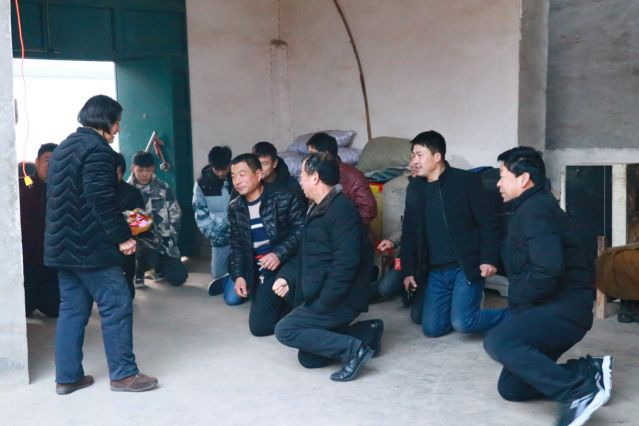
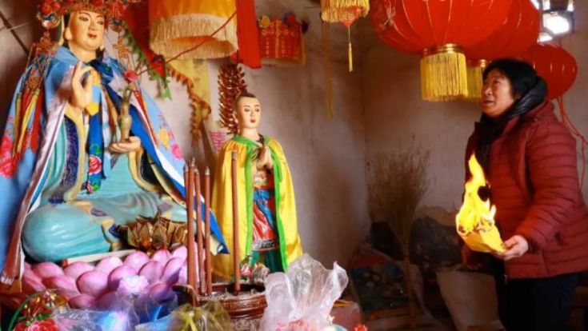
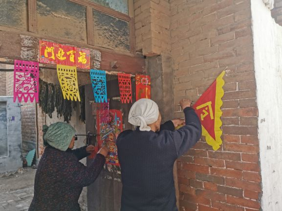
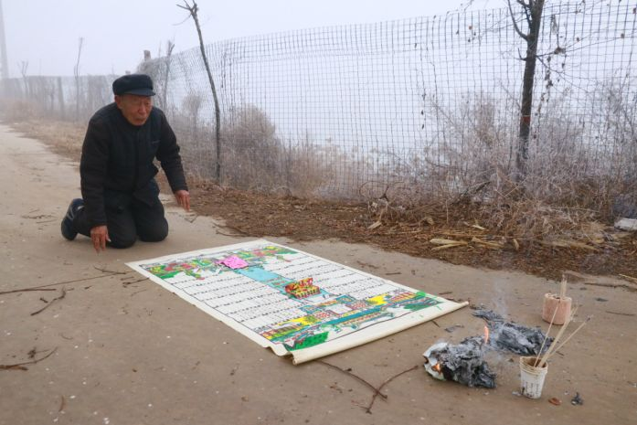
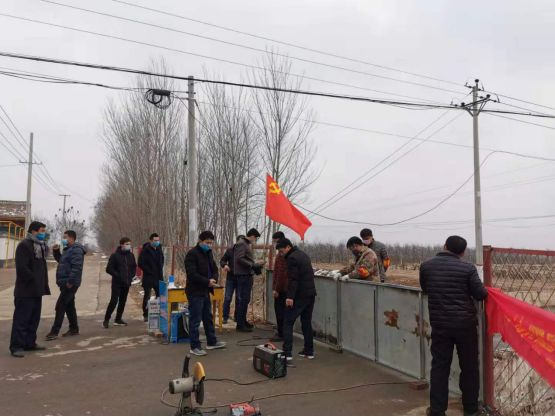

排查、劝返、大喇叭、封路，农村这样防肺炎
原文链接 备份链接 《战疫口述记》，是燃财经在新型冠状病毒肺炎期间推出的特别栏目，记录疫情亲历者的观察和感受。本文为第2期，第1期请见《我在武汉战肺炎》。 作者 | 闫丽娇 唐亚华 孟亚娜 金玙璠 黎明 孔明明 苏琦 编辑 | 周昶帆 春 …
2020年1月13日，疫情还远在长江边的武汉，身在北京的我简单地收拾了两件衣服，坐上开往河北省邯郸市的高铁，我的寒假田野调查就正式开始了。出发之前我向导师熊春文老师表达了自己想要去“曲周田野点”与村里的乡亲们过春节，并深度参与观察他们日常生活的想法。导师表示支持，但叮嘱我要提前跟家里说好，照顾好自己。这也是我第二次在田野点过春节了，上一次是2014年在怒江傈僳族自治州的小茶腊，而这一次是在邯郸市的曲周县。一个是西南的边境，一个是内地的华北。在人类学的田野工作中，要求你住在那里，建立关系，呆上一年的时间可能是一个惯例。在这一年的春夏秋冬周期里，才有可能对当地人生活的各个方面给出一个总体性的描述。
冬季对于华北的农村来说是一个休养生息的时节，庄稼在地里盖着白雪“被子”默默地生长着。忙碌的农民们卸下一年的劳苦，在家里准备着过年的各种风味美食，去镇上购置各种年货，请各路神仙以及祖先回家，在外漂泊的年轻人也匆匆赶回家团聚。年前年后也是相亲、结婚、出嫁等各种喜事集中的时段。1月14日，我刚到村里就逢上喜事，住家胜哥的女儿15日要出嫁。按照村里的习俗我随了礼钱，并记录下婚礼仪式的过程。

1月16日，大家还沉浸在新人喜结连理的欢悦中，意犹未尽地期待着新年。而我虽然每天都会关注着武汉疫情的态势，但也跟村民正常生活一样，照常进行着每天的入户访谈。就在大家满心欢喜迎接新年的时候，却不想迎来的是一场与十多年前相似的疫情。
1月22日，腊月二十八晚上，朋友圈有关武汉即将“封城”和口罩缺货的消息炸开了锅。其实前几天我就跟大家说武汉的这场疫情可能没有那么简单，再加上春运可能扩散得会更快。但大家都不以为然，位于长江边的武汉对于他们来说太过遥远而陌生，因而对这场病毒的印象仿佛就像非洲的埃博拉病毒一样，远之又远。胜哥说：“不用担心，我们这离武汉比较远，我们村几乎都在本地务工，村里到外地打工的不到12人，还都是去北京、石家庄等地”。随着武汉“封城”、河北出现首例、村委会通知封村，大家这才觉得新冠肺炎疫情可能真的要到来。
1月23日，腊月二十九。眼看村民们的防护意识不够，我只好独自一个人上街去提前买些医用口罩、酒精、84消毒液、板蓝根等防护用品，分给我左邻右舍的一些乡亲们，并叮嘱大家出门串街的时候一定要戴口罩，注意保护自己。在叮嘱他们的同时，我也叮嘱家里人做好防护，毕竟今年没回家，有些担心家人。
1月25日，大年初一。过去，每到初一的凌晨，村里的晚辈不分家族都要给长辈们磕头拜年。眼下疫情肆虐，各家族商议过后作出决定，今年的拜年仅限于本家族长辈，免得大家到处走动带来麻烦。然而直到凌晨磕头拜年的时候，戴口罩的依然不超过5个人，大家还开玩笑地跟我说“多喝酒，喝酒能消毒；多抽烟，抽烟可以杀死病毒。”不过妇女们在早起敬“天爷”和“全神”的时候却希望神灵们赶快平息这场“瘟疫”。胜哥的女儿打来电话说：“我们这边已经封村，明天不用来接亲了。”胜哥说：“不好吧，按照规矩我们还是要去，毕竟他们家有老人在，如果不去不合礼数。”显然，在村民眼里，即使有危险也不能失了礼数。

1月26日，大年初二。今天原本是“走姥姥家”，现在也因为疫情取消了，只有本村内部嫁娶的姑娘还能走动。胜哥的亲家也亲自打来电话说今年疫情形势太紧张，礼数等明年再补上。
从大年初二开始，村里制度、组织层面能够响应的几乎都动员了起来。村干部在村里的东南西北口轮流值班，把控每天出入的人员和数量。为出入的村民测量体温、消毒登记。支书每天通过喇叭播报三次广播，用乡土能够接受的语言告诫大家不要串门、不要聚众、勤洗手、戴口罩。每天中午10点、下午3点，村干部都要拉着音响在每个过道播放普通话版本的防疫宣传。村里的合作社每隔三天开着拖拉机志愿为村里面喷洒消毒液。

由于出村的路口太多，村干部人手又不够，村委会不得已在全村招募志愿者协助值班。我报名参加了志愿者，希望可以尽我微弱的力量为村里做些贡献。在村口值班是一个技术活，也是一个人情互动场所。防护意识不强的村民觉得没有必要，不需要操作这么严格，所以非常希望能减免消毒和登记的手续。这个时候如何向村民以他们能够接受的方式，委婉地表达消毒测量体温的必要性，如何把握适度的分寸不至于造成尴尬同时又能完成消毒登记任务就要看个人的话语水平了。表达自己的需求时也推己及人地为对方考虑，可能是最容易让他们接受的方式。由于严禁大家到处乱串门聚会，男人们在家无事可做，所以疫情检查点就成了男人们聚集的场域。每个到值班口的人都戴着口罩，有一次性的医用口罩也有山寨版的N95口罩。村民来这里的目的也多种多样，有的是来侃大山闲谈曾经的“非典”，有的讨论疫情的局势，分析网络上铺天盖地的媒体信息，猜测鄂省临时换帅的真正原因。有的则是想帮助村干部值班以获得成为入党积极分子的资格。按照福柯的观点，话语不仅体现为对世界秩序的整理，而且与权力缠绕在一起，作为权力的可能性条件而起作用。“真理”不在于话语“是”什么、也不在于它“做”了什么，而在于它“说”了什么，换句话说，被阐述对象的意义以及表达与其对象的关系成为判断真理性的根据了。我则在一旁听着不同身份村民的言谈，也时不时利用这个机会，向大家宣传一些有效信息，科普一些疫情知识，并告诉他们正确戴口罩的方法以及不要戴山寨版的N95口罩。

除了世俗制度上的防护体系，村里的民间信仰也在构建起他们所谓的“神圣空间”防疫体系。村里共有四座庙，以村东头的南海观音菩萨庙、龙王庙、老母庙香火最为旺盛。老母庙、龙王庙是道家的神灵，南海观世音菩萨则是佛家的神灵，三座庙相对而立。几座庙也有各自的功能和职责，老母和观世音菩萨主掌日常生活中的生老病死财福禄寿，龙王庙主掌农事的风调雨顺。每逢大年初一、正月十五、八月十五以及平日有事相求之时，村里的妇女都会来烧香祈祷。而今年因为疫情的缘故尤其频繁。自大年初二开始，信仰比较虔诚的12个妇女，每日从早到晚三班制轮流向菩萨念经祈祷，以期望观世音菩萨能显灵驱散这瘟疫。她们说：“南海观世音菩萨是大慈大悲救苦救难的，有她在我们村就不会有病。”在他们看来每位神灵都负责村落不同的方位，能在上空建立起防护的网络，以免瘟神降临。此外，每家每户都供奉着不同层级的神灵，最高地位的是“天爷”掌管所有的神仙，其次是财神、灶神、土地、仓管、车神。在这些神灵之外还有一个所有神仙的全家福叫“全神”。这些神灵都各司其职地保护着每个家户。有的家户还专门求来驱散瘟疫的“令”及“红莲花纸”，据说这可以防瘟神进入家门。有时候，我们需要去理解农民信仰空间所赋予的意义，当很多无法用常识解释清楚的事实摆在面前时，求助于未知的神灵是他们心底安全感的一种来源，某种程度上这与我们从书本里面找寻科学的逻辑解释并无二致，只是解释的效力和范围的差异罢了。

1月29日，正月初五。过了初五就是“破五”了，按照村里面的规矩可以出家门离村外出了。以往的这个时候部分在外地常年务工的都要背起行囊跟家人告别了。但是今年即使“破五”也只能呆在家中。附近的童车厂因为疫情也无法按时开工。村民们开始担心起来，这样一眼望不到头的疫情，何时才是个头，“当官的不工作可以，因为他们有工资，但是我们老百姓就没法了，这样下去恐怕要坐吃山空。”缺乏兜底的保障与多元的生计出路这是农民们最没有安全感的地方。就如托尼所描述的那样，“中国的农民仿佛是在站在河流中，水已齐深到脖子，随时的一个浪花都可能会淹没他们。”
2月8日，正月十五。过了正月十五，这一年的团圆日子就结束了，大年三十迎回家的祖宗明天也要送走了。正月十六的早上吃完“杂饭”，各家户都把祖宗的牌位拿着送到村口，点三炷香，摆上贡品，欢送祖宗。“今年没过个好年，明年再回来补上。祖宗走好，保佑我们平安。”

2月9日，正月十六。今天是第二个潜伏期的开始，村落也加强了防护。政府给每位值勤的人员配备了防护服。为了节省人力，村委会把其余的村口全都封死，只留下村东街的桥口作为检疫点。检疫点既是边界也是通道，村民有急事的都从这里出入，所有的生活物资也都在这里补给。镇上的商铺还有附近养鸡的散户把鸡蛋、菜蔬、米面油盐等生活物资运到检疫点，待村委会消毒过后，村民们不用出村就可以获取生活必需品。“作为疫情之下的戒线，检疫点仿佛就像是‘边界’，是一种人为的中断与界限。但同时检疫点也是一种‘通道’，实现了村落与外界在空间上和时间上的连接与连续，‘通道’也具有了无限延展的特性。因此，检疫点也成了必要的停顿和汇集。”

比起2003年的非典疫情，这一次村民们更加懂得如何自我防护了，这当然得益于政府有效的宣传。有位村民年前参加另外一个村的葬礼时，无意中接触了从武汉回来的一位亲戚。虽然那位亲戚疫情爆发之前就从武汉回来了，但他还是很自觉地将自己隔离起来每天测量体温并做记录，直到2月10日确认安全后才解除自我隔离。
同时，村民们也坚信这一次会像上一次的非典一样安全度过。虽然每天他们会关注外界的新闻动态、议论疫情的变化，但在内心总有一种安全感。在他们的记忆里，无论是非典还是流感，首先都是在城里爆发，乡下由于地理空间大、人员稀疏、人口流动小再加上有必要的生活物资反而成了理想的“避难所”，每到这个时候他们又不禁感叹：“还是农村好，城市多危险！”但大家心里都清楚，这些都是天然的隔离措施，真正科学而有效的防控工作远远不及城市。如果出现一例疫情，那整个村落将无一幸免。乡村因为地缘的优势看起来是相对安全的地方，但也因为治理的层级剥落恰恰也是防护相对薄弱的地带。当疫情结束后他们的愿望还是想去城市生活，如果这一代不行就寄希望于下一代，城市对于他们永远有一种不可控制的魔性吸引。他们的安全感还来源于国家有效及时的行动，每天看到大量的医疗队赶往武汉及不断上升的治愈数字，他们都在内心为之加油鼓掌。
虽然村落在物理空间上封锁了，但是在村民心理上却是敞开的。这得益于全国层面上有效的隔离措施。大家的生活与之前并无太大异样，只是见面的时候多了个口罩，彼此的问候更多地通过微信、快手、抖音来交流。年节本该有的热闹与红火少了许多。虽然无法出去务工，但也是少有的家人团聚时刻。父母趁这个机会与求学在外的孩子加强了情感的联系，在一旁与他们一起上网课。老人们也在这个时候得到了子孙们少有的陪伴。他们指着挂在墙上的祖先牌位，告诉后辈们从老祖一世到现在十八世的各种传奇故事。夫妻俩收拾家屋，把原来压在角落里的旧物件拾掇出来归纳摆放好。原来没来得及整修好的天花板重新修葺一番。所有不曾记起的日子都在这个时候重新整理出来，晾晒起来。所有过去的往事也都在这个疫情之下慢慢地回忆出来，变作言谈间的笑语。慢下来，重新回到没有精确分秒的日子，重新捡拾起那已经忘却的传统，重新建立起与祖先的联系。这或许是疫情之下村民们最大的不期而遇。
村民们看待我的身份是中国农业大学科技小院的大学生，“科技小院”的住所墙上也写着“解民生之多艰，育天下之英才”的校训。每天村民们碰到我都会问起今天的疫情到底如何。因为信息的不对称性和模糊性，再加上数字的变动经常会给他们带来恐慌和不安全感，所以我的一些言辞解释就显得很有必要。除了在村干部缺人手的时候为他们值班站岗，我把自己购置的医用口罩和一些必需的消毒物品分给一部分没有来得及购置的村民，同时还建立了一个微信群，每天定时给村民们发布一些经过我筛选相对可靠的疫情信息、防护知识，再通过他们传递给更多的亲戚朋友，以此来避免他们面对眼花缭乱的网络信息无所适从，同时也让他们对这次疫情有了更详细的认知和理解。对于“科技小院”，村民们还是信任的，毕竟作为科学与知识象征的中国农业大学“宿”于乡土间已有四十余载，在村民的心目中也有着举足轻重的地位。

由于疫情，村里许多丰富的节日习俗没能如我所愿地展示出来，但是记录非常时期的异乡春节，却也别有韵味。就像他们所说：“桑坤，你来到这里跟我们一起过春节，就把这里当成是你的第二故乡呢！”于我则是安下心来，参与这第二故乡的生活中，用文字记录下这一切，并与你分享。写到这里我想对大家说：
也许你并不身在田野，可能因为疫情的原因留在家里面。也许我们所做的非常有限，而在这个时候恰恰是可以静下心来观察你周围人和事的好机会。在突然变慢的生活节奏里感受疫情所带来的一系列连锁反映。试着去和未曾深入交谈的长辈们，聊一聊他们对于当下和过往的观感；听一听那些即将被时光淘尽的岁月洗尽铅华的故事，以及言语间所蕴含人生智慧还有练达的人情学问；理一理你的家谱，找一找家族的血脉之根以及有关的历史记忆，并试着跨越时空与祖先们建立起根骨的联系。
你可以用社会学的眼光和人类学的视角去观察并记录他们，并把它们变成你看待世界的独特方式。自我以外皆是他者。从这一点上，每个人都是你可以去深入理解并且深入剖析的对象。如果你想研究婚姻和亲属制度，为什么不从你所在的家族开始着手呢？如果你想理解一个村落的权力关系为什么不从自己生活的村落开始呢？如果你想弄清楚一个村落的信仰体系，为何不从身边的长者们突破呢？
在这个意义上，人生处处是田野。我们走过、路过、遇到的每一个人，都可能会成为我们走进他者世界的机会。所以试着用我们学科的眼光和视角，去重新看待我们再熟悉不过的生活，也许你会发现意外的惊喜，因为自我的呈现就在每个人日常生活琐碎的细节里。田野工作永远是一个无休止的过程。静下心来去观察每一个不同的面向，从行动背后透过他者的世界去理解他者的思想，透过他者的思想进而构建起他者的意义之网，同时又通过这个意义之网来反观自己。如此以来，你才有可能走进他者，“反景入深林”。
通过这样的观察我们才明白，原来人类社会在面临重大的事件时候会启动所有可以带来安全感的资源来去应对，无论是从个体还是到社会，无论是从组织还是到制度，无论是从机制还是到过程，无论是从世俗还是到神圣。但不同区域的响应程度不同，其区别的原因就在于他们在历史记忆中对类似重大事件的认知能力和经验积累的丰富度。我所在的村落因为没有亲身经历过如此重大的疫情，在他们的记忆里面关于疾病还没有成系统的经验和知识技巧，因而也就对这些事物的认知停留在自上而下的层面上。这一次或许比上一次的非典带来的印象更为深刻，也让村民们开始建立起有关重大事件的应对技巧和机制。
疫情对于我们来说，仿佛是一个可以反思的时期，无论你在田野还是在家又或在校都可以静下心来去思考，关于你和你的内心世界、你和他人、你和整个社会、以及你和大自然之间相处的关系问题。如何去处理内心的矛盾和张力并把它们融合在一个平衡点上，人总要把这些关系拎清楚才能活的明白，所谓“世事洞明皆学问,人情练达即文章”说的就是这个道理吧。
这一段时间的经历也告诉我，理解一个复杂的世界，仅从某些学科的视角来看某类事件的社会过程依然是不够的，因为承载着多数经济生活的社会本身，并非仅仅是政治的或经济的，实际上大部分人生活在经济和政治二元对立之外，社会事实远比这二者的关系更为复杂。现代风险“对整个人类来说是全球性的威胁”,是“意味着地球上所有生命自我毁灭的威胁”。这种风险所威胁的对象已经不是某一个人或群体,而是整个人类,在这样的风险面前,没有人能够置身事外,已经没有“他者”。
虽然我所在村落距离这场新冠肺炎疫情较为遥远，某种程度上这是因为整个制度和国家治理体系的日益完善使自上而下的机制响应比较及时，从而阻止了这场疾病的传入。但并不代表下一次这里就不会发生什么，就我自身的观感来说，对于农村地区为他们构建起多元的生计系统，给他们提供稳定的兜底保障，同时提高他们对于重大事件的应急能力，这或许是乡村振兴的关键所在。
面对疫情，无论你身在何处，拿起笔用心去记录这疫情之下日常生活的点滴，深描细致入微的心灵习性，并尝试做一定程度的意义解释。多年后它将成为宝贵的财富。期待疫情结束之后，我们再聚首时的畅谈分享！
桑坤
2020年2月14日于华北田野点
桑坤：中国农业大学人文与发展学院社会学与人类学系博士研究生；云南大学民族学与社会学学院硕士毕业生。
感谢作者授权转载。
原文链接 备份链接 《战疫口述记》，是燃财经在新型冠状病毒肺炎期间推出的特别栏目，记录疫情亲历者的观察和感受。本文为第2期，第1期请见《我在武汉战肺炎》。 作者 | 闫丽娇 唐亚华 孟亚娜 金玙璠 黎明 孔明明 苏琦 编辑 | 周昶帆 春 …
原文链接 备份链接 *************▲*************玉龙雪山脚下的玉湖村。 （受访者供图/图） 全文共*4244*字，阅读大约需要10分钟。 在求助信里，我写了四样求支援的物品，是因为我只知道这四样。而实际情况 …
原文链接 备份链接 2月3日，武汉市洪山区驿海柏曼酒店，医生袁红在查看一名疑似患者的肺部CT，并告知病患“您目前的感染情况不严重，不要害怕”。该酒店的医生会根据疑似病患此前在医院得到的诊断，对其作大致的病情判断，并提供抗病毒、退烧的口服 …
原文链接 备份链接 这一周，有超过500位读者同我们分享了自己关于爱的故事。今天，我们选取了其中的一些故事，以配合这个名为「情人」的节日——今时今日，这一天似乎看起来不合时宜，但正是因为今时今日，我们才该庆幸，还好，我们还有爱情。 策 …
原文链接 备份链接 向风暴眼输送防护物资并非易事武汉市中心医院医生发布微博求助，希望社会各界捐物资。图源：微博截图 2月12日晚，武汉中心医院的一位医生在微博发出求助。 这位身穿防护服的医生对镜头说，医用N95没有了，只能戴工业口罩，医 …